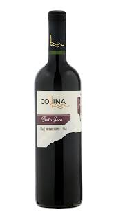

TIPOS DE VINHO
vinho tinto seco: Vinho seco tem a coloração em vermelho escuro ou roxo e em aparencia é similar ao tinto suave, porem diferente do suave, ele é adocicado apenas pelas uvas, tendo apenas 4g de açuçar por litro

vinho tinto suave: Da mesma forma que o vinho seco, tem uma aparencia vermelha escura ou roxa, porem o vinho tinto suave é adocicado com açucares adicionais

vinho branco: o vinho branco possui uma coloração transparente devido ao uso uvas mais claras
 vinho rose:
Vinho rose possui a coloração de rosa clara por mais que sejam utilizadas as mesmas uvas do vinho tinto, a diferença da coloração se trata no fato de que pouco tempo após a preparação do vinhos, as cascas das unhas são removidas
vinho rose:
Vinho rose possui a coloração de rosa clara por mais que sejam utilizadas as mesmas uvas do vinho tinto, a diferença da coloração se trata no fato de que pouco tempo após a preparação do vinhos, as cascas das unhas são removidas